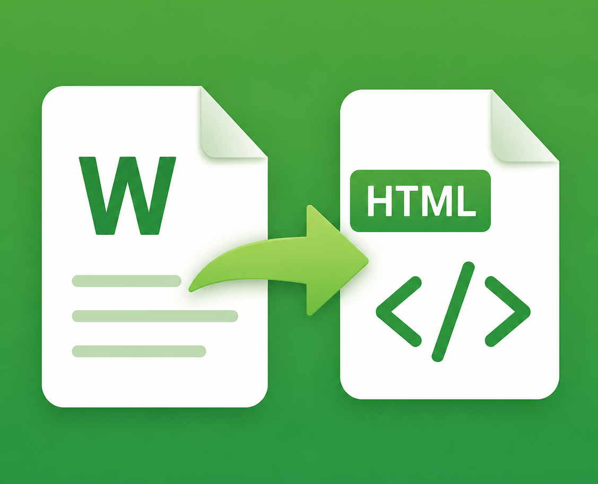

WORD TO HTML
نسخه ۱.۱
تبدیل ورد به HTML
از سند ورد تا کد تمیز، در چند ثانیه
شروع تبدیل
در حال تبدیل سند…
خروجی HTML
پیشنمایش زنده
نمای نهایی محتواسند شما اینجا جان میگیرد
بعد از تبدیل، پیشنمایش محتوا را ببینیدتاریخچه اخیر
۱۰ خروجی آخرهنوز خروجی ذخیره نشده؛ با کپی کد، اینجا ثبت میشود.